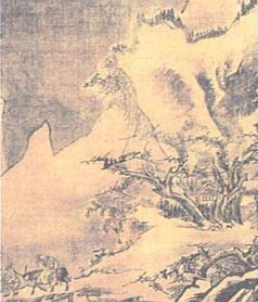
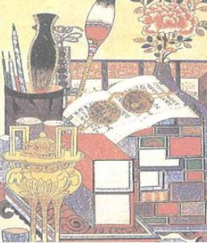

수묵 담채화는 수묵화 그리기를 한 후, 채색을 엷게 한 그림을 말해요. 먹물로 윤곽선을 그리고 엷은 색을 입혀 은은한 느낌을 주지요. 그리는 방법은, 우선 화선지에 밑그림을 그리고 그 위에 먹선을 덧그리면 되지요. 마지막으로 물감을 이용하여 엷게 색을 칠하면 그림이 완성됩니다.

수묵 채색화는 수묵화 그리기를 한 후 채색한다는 점은 수묵 담채화와 같지만 엷은 색으로 채색한 뒤, 중간색, 진한 색으로 계속 칠하기 때문에 전체적으로 진한 색을 내지요. 또한 바탕색도 칠하기 때문에 화려한 느낌을 준답니다.